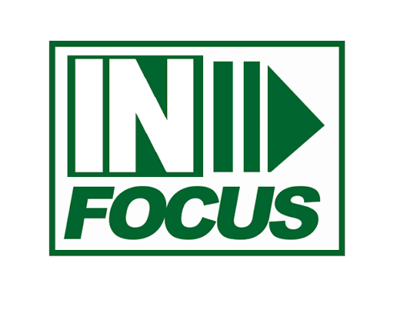
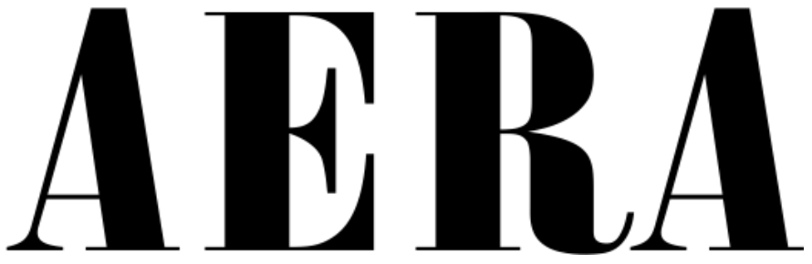
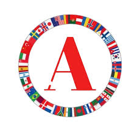
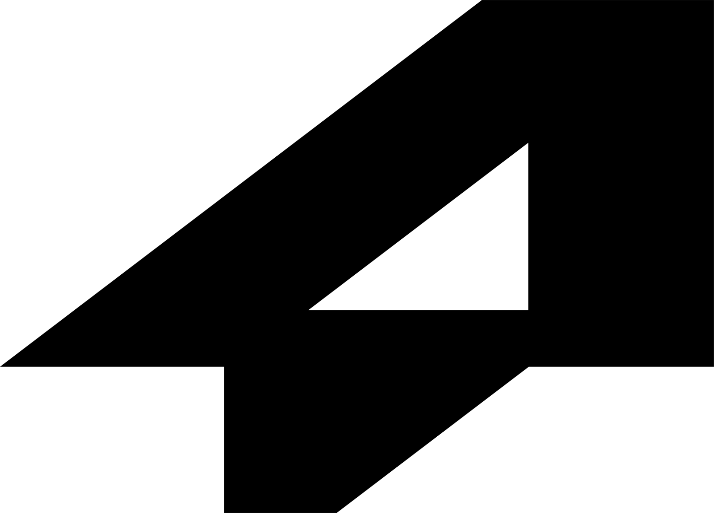
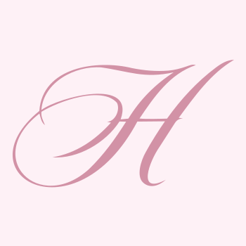

[01]journalist

infocus news
aera magazine
agora magazine
[02]leader
- palo alto speech & debate camp
- jeanc
[03]prev. research assistant
 dr. beth van schaack
dr. beth van schaack
[04]designer

aerosim
halawaat
i work at the intersection of politics, media, and design through my journalism, competitive debate, research, and filmmaking. i think deeply about how stories shape perspectives, how media influences the way we understand the world, and how creative mediums can make abstract ideas more accessible. i’m drawn to the spaces where information meets expression, and where thoughtful storytelling can challenge assumptions, amplify overlooked voices, and cultivate meaningful change. ultimately, the ability to voice the unvoiced is what drives me most.
voicing the unvoiced through politics, media, & design
based in palo alto
noorfahadkhann@gmail.com© 2026